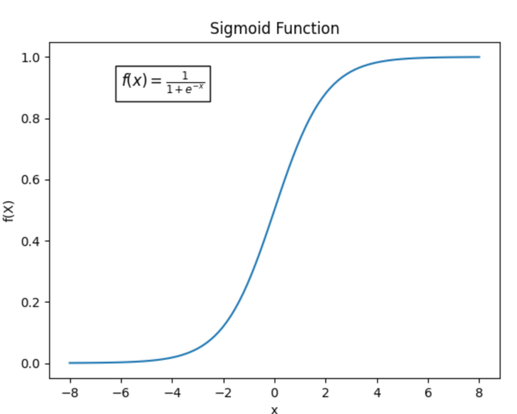
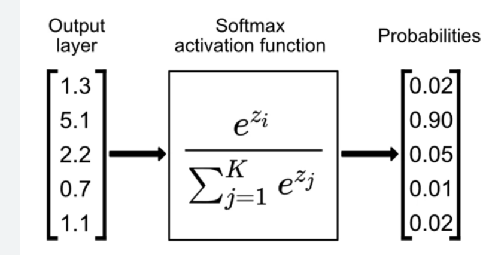

Activation functions are a crucial component of neural networks. They introduce non-linearity, allowing neural networks to model complex relationships in data. Without activation functions, a neural network would simply be a linear regression model, severely limiting its ability to learn intricate patterns.
The primary purpose of an activation function is to transform the input signal of a node in a neural network into an output signal. This transformation must introduce non-linearity because real-world data is rarely linear. Activation functions decide whether a neuron should be "activated" or not based on the relevance of its input.
The sigmoid function, denoted as σ(x) = 1 / (1 + e^(-x)), maps any input to a value between 0 and 1. It was widely used in early neural networks due to its smooth gradient and interpretable output (which can be seen as a probability).

import numpy as np
import matplotlib.pyplot as plt
# Sigmoid function
def sigmoid(x):
return 1 / (1 + np.exp(-x))
# Generate values for x
x = np.linspace(-10, 10, 400)
# Calculate sigmoid values for x
y = sigmoid(x)
# Plotting the Sigmoid function
plt.figure(figsize=(8, 6))
plt.plot(x, y)
plt.title('Sigmoid Function')
plt.xlabel('x')
plt.ylabel('σ(x)')
plt.grid(True)
plt.show()
However, the sigmoid function suffers from the vanishing gradient problem, especially when inputs are very high or very low, causing the network to learn very slowly or not at all.
The ReLU function, defined as f(x) = max(0, x), outputs x if x is positive and 0 otherwise. ReLU is computationally efficient and helps mitigate the vanishing gradient problem in many cases.
import numpy as np
import matplotlib.pyplot as plt
# ReLU function
def relu(x):
return np.maximum(0, x)
# Generate values for x
x = np.linspace(-10, 10, 400)
# Calculate ReLU values for x
y = relu(x)
# Plotting the ReLU function
plt.figure(figsize=(8, 6))
plt.plot(x, y)
plt.title('ReLU (Rectified Linear Unit)')
plt.xlabel('x')
plt.ylabel('f(x)')
plt.grid(True)
plt.show()
A disadvantage of ReLU is the "dying ReLU" problem, where neurons can become inactive for all inputs if they get a large negative gradient during training.
The Tanh function, given by tanh(x) = (e^x - e^(-x)) / (e^x + e^(-x)), maps inputs to a range between -1 and 1. It is similar to the sigmoid function but is centered at zero, which can sometimes lead to faster convergence.
import numpy as np
import matplotlib.pyplot as plt
# Tanh function
def tanh(x):
return np.tanh(x)
# Generate values for x
x = np.linspace(-10, 10, 400)
# Calculate Tanh values for x
y = tanh(x)
# Plotting the Tanh function
plt.figure(figsize=(8, 6))
plt.plot(x, y)
plt.title('Tanh (Hyperbolic Tangent)')
plt.xlabel('x')
plt.ylabel('tanh(x)')
plt.grid(True)
plt.show()
However, Tanh also suffers from the vanishing gradient problem, although it's less severe compared to the sigmoid function due to its output range being centered around zero.
Leaky ReLU is an attempt to fix the dying ReLU problem. It has a small slope for negative values instead of zero, typically defined as f(x) = x if x > 0 and f(x) = αx if x ≤ 0, where α is a small constant (e.g., 0.01).
import numpy as np
import matplotlib.pyplot as plt
# Leaky ReLU function
def leaky_relu(x, alpha=0.01):
return np.where(x > 0, x, alpha * x)
# Generate values for x
x = np.linspace(-10, 10, 400)
# Calculate Leaky ReLU values for x
y = leaky_relu(x)
# Plotting the Leaky ReLU function
plt.figure(figsize=(8, 6))
plt.plot(x, y)
plt.title('Leaky ReLU')
plt.xlabel('x')
plt.ylabel('f(x)')
plt.grid(True)
plt.show()
This ensures that even when the neuron is not activated (i.e., for negative inputs), it still has a small gradient, preventing it from becoming completely inactive.
The Softmax function is commonly used in the output layer of a classification neural network. It converts a vector of numbers into a probability distribution, where each element is in the range [0, 1], and all elements add up to 1. Given a vector z, the Softmax function is defined as: softmax(z)_i = e^(z_i) / sum(e^(z_j)) for all j.

import numpy as np
import matplotlib.pyplot as plt
# Softmax function
def softmax(x):
e_x = np.exp(x - np.max(x))
return e_x / e_x.sum(axis=0)
# Example values for x
x = np.array([2.0, 1.0, 0.1])
# Calculate Softmax values for x
y = softmax(x)
# Print the softmax values
print("Softmax values:", y)
# Example plotting
x_plot = np.linspace(-5, 5, 400)
y_plot = softmax(x_plot)
# Plotting the Softmax function
plt.figure(figsize=(8, 6))
plt.plot(x_plot, softmax(x_plot))
plt.title('Softmax Function')
plt.xlabel('x')
plt.ylabel('Softmax(x)')
plt.grid(True)
plt.show()
This is particularly useful for multi-class classification problems, where you want to determine the probability that an input belongs to each class.
The choice of activation function depends on the specific problem and architecture of the neural network. ReLU and its variants are often a good starting point for hidden layers due to their computational efficiency and ability to mitigate the vanishing gradient problem. Sigmoid and Tanh are less commonly used in hidden layers now but can still be useful in specific cases, such as when an output between 0 and 1 or -1 and 1 is required. Softmax is typically reserved for the output layer in multi-class classification tasks.